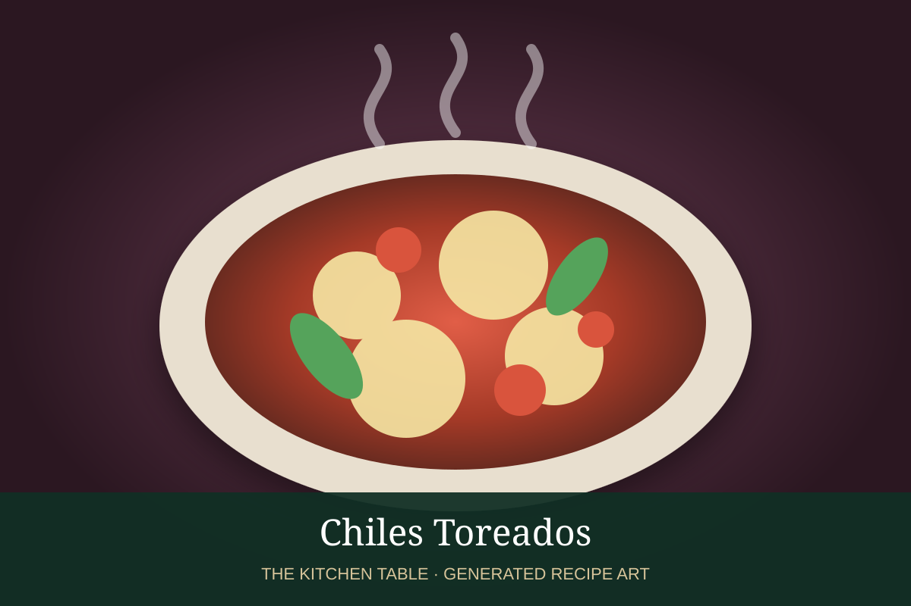

← Back to all recipes
CHILE · MEXICAN
Chiles Toreados
Blistered jalapeños and serranos with onion, lime, and a splash of soy sauce or Maggi.
15 minServes 4

Photo: Cloc Food
Ingredients
- 4 jalapeños
- 4 serrano chiles
- 1/2 white onion, sliced
- 1 tbsp neutral oil
- 1 tbsp soy sauce or Maggi
- Juice of 1 lime
- Salt
Preparation
- Heat oil in a skillet over medium-high heat.
- Blister chiles until deeply charred in spots.
- Add onion and cook until softened and browned.
- Add soy sauce or Maggi and toss.
- Finish with lime and salt.